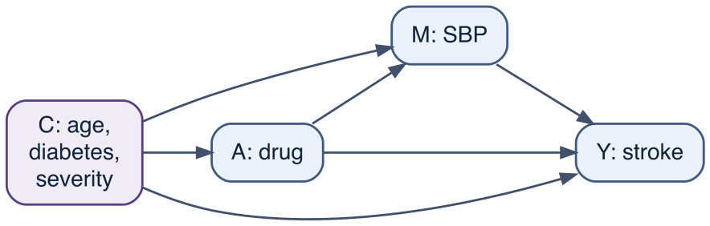

16 DAG-based mediation
Every causal estimate so far has been a total effect: the consequence of treating for the whole population. Chapters 12 and 14 try to get that number right against confounding. Here we ask a different question. Suppose a stroke-prevention drug lowers blood pressure. Because blood pressure causes stroke, at least part of the drug’s effect must run through blood pressure. Is that the whole story, or does the drug also protect by some other route that does not pass through blood pressure at all? Splitting the total effect into a part that flows through a named intermediate variable and a part that flows around it is the business of mediation analysis.
Estimating a total effect needs the treated and untreated to be comparable; estimating the split needs that and a second comparability condition on the intermediate variable, which randomisation of the treatment cannot supply. Much of this chapter is about this extra condition and the ways an analysis fails when it is ignored — often by including the intermediate variable in the outcome regression.
16.1 The mediator in the graph
The intermediate variable is called a mediator. In the cohort, the mediator is post-baseline systolic blood pressure (sbp): the drug lowers it (drug -> sbp) and as sbp influences stroke risk (sbp -> stroke), so drug -> sbp -> stroke is a causal chain carrying part of the effect. A separate arrow drug -> stroke carries whatever effect does not pass through blood pressure. The confounders C are each a common cause of treatment, mediator and outcome. Because C points into both SBP and stroke, it confounds the mediator-outcome relationship as well as the treatment-outcome relationship.
A mediator is structurally distinct from the two basic DAG structures we met in Chapter 11. A confounder is a common cause of treatment and outcome (a fork, A <- C -> Y); adjusting for it removes bias. A collider is a common effect of two variables (A -> S <- Y); adjusting for it creates bias. A mediator lies on the causal path from treatment to outcome (A -> M -> Y); adjusting for it removes the part of the effect that runs through it. The three demand opposite handling, and the same variable plays different roles for different questions — in Chapter 14, blood pressure at a later visit was a confounder of the later treatment and a mediator of the earlier one at the same time, which is what made that setting intractable for ordinary regression.
An interesting feature of Figure 16.1 is that the confounders in C point into both the mediator and the outcome. Both age and severity do this: older and sicker patients have higher blood pressure and more strokes for reasons that have nothing to do with the drug, so each confounds the mediator-outcome relationship. (Severity is the one we deliberately hide later, to show what its omission does.) The treatment is assigned as if at random within levels of C in this cohort, but the mediator is not assigned that way. We will see that the decomposition of the direct and mediated paths depends on comparability of the mediator, not just of the treatment.
16.2 Total, direct, and indirect effects
To define the pieces precisely we extend the potential-outcome notation of Chapter 10. Write \(Y(a)\) for the outcome under treatment level \(a\), and \(M(a)\) for the value the mediator would take under treatment \(a\). The new object is a nested counterfactual, \(Y(a, m)\): the outcome if treatment were set to \(a\) and the mediator were set, independently, to \(m\). Combining the two, \(Y(a, M(a^*))\) is the outcome if treatment were set to \(a\) while the mediator took the value it would have taken under a possibly different treatment \(a^*\). The total effect is the contrast in which everything moves together,
\[ \text{TE} \;=\; E[Y(1, M(1)) - Y(0, M(0))] . \]
There are two ways to define a “direct” effect, and they answer different questions.
The controlled direct effect fixes the mediator at one value \(m\) for everyone and toggles the treatment: \[ \text{CDE}(m) \;=\; E[Y(1, m) - Y(0, m)] . \] It answers a policy question — what the treatment would do if we also intervened to hold blood pressure at \(m\) — and it generally depends on the chosen \(m\). The natural direct effect instead lets the mediator take the value it would naturally have had under no treatment, and toggles only the direct arrow: \[ \text{NDE} \;=\; E[Y(1, M(0)) - Y(0, M(0))] . \] The natural indirect effect holds the treatment switched on and moves the mediator from the value it would take untreated to the value it would take treated: \[ \text{NIE} \;=\; E[Y(1, M(1)) - Y(1, M(0))] . \]
The natural effects are built to add up. Inserting and subtracting the cross-world term \(Y(1, M(0))\) telescopes the total effect into the two pieces: \[ \underbrace{Y(1,M(1)) - Y(0,M(0))}_{\text{total}} =\underbrace{Y(1,M(1)) - Y(1,M(0))}_{\text{indirect (NIE)}} +\underbrace{Y(1,M(0)) - Y(0,M(0))}_{\text{direct (NDE)}} . \] So \(\text{TE} = \text{NDE} + \text{NIE}\) on the difference scale. Splitting instead through the other cross-world term \(Y(0, M(1))\) gives a second, equally valid decomposition, with direct effect \(\text{NDE}^\ast = E[Y(1,M(1)) - Y(0,M(1))]\) and indirect effect \(\text{NIE}^\ast = E[Y(0,M(1)) - Y(0,M(0))]\) — the mediator now moved with the drug held off. The two decompositions agree on a single split only when treatment and mediator do not interact in their effect on the outcome. In this cohort they do interact, so the two disagree; that gap, and what it means, is the subject of the next section. The four-way decomposition promotes the interaction to a component of its own (Chapter 16); here we keep the two-way split and are explicit about which reference it uses.
The term that makes all of this possible, \(Y(1, M(0))\), is a cross-world quantity: the stroke risk for a patient who is treated, but whose blood pressure is held at the level it would have been had she been untreated. No experiment can place a person in that state, because a person is either treated or not.
The four worlds entering the two decompositions are summarised below; each corresponds to one of the cohort’s oracle columns, which exist only because we built the data.
| Counterfactual | Drug in the outcome | Blood pressure held at | Oracle column |
|---|---|---|---|
| \(Y(0, M(0))\) | untreated | its untreated level | risk0 |
| \(Y(1, M(0))\) | treated | its untreated level (cross-world) | risk_d1m0 |
| \(Y(1, M(1))\) | treated | its treated level | risk1 |
| \(Y(0, M(1))\) | untreated | its treated level (cross-world) | risk_d0m1 |
16.3 What the cohort really does
Because the data-generating process is known, each counterfactual world is a column we can read directly. The natural effects are simple averages of differences between those columns — and there are two ways to take them.
df <- simulate_cohort(n = 50000, seed = 2024)
df$age_c <- (df$age - 62) / 10 # base assignment keeps the oracle attribute
df$sbp10 <- (df$sbp - 140) / 10 # blood pressure, centred (per 10 mmHg)
o <- attr(df, "oracle") # the answer key
EY00 <- mean(o$risk0) # E[Y(0, M(0))]
EY11 <- mean(o$risk1) # E[Y(1, M(1))]
EY10 <- mean(o$risk_d1m0) # E[Y(1, M(0))] -- cross-world for decomposition A
EY01 <- mean(o$risk_d0m1) # E[Y(0, M(1))] -- cross-world for decomposition B
c(NDE_A = EY10 - EY00, NIE_A = EY11 - EY10, # split through Y(1, M(0))
NDE_B = EY11 - EY01, NIE_B = EY01 - EY00, # split through Y(0, M(1))
total = EY11 - EY00) NDE_A NIE_A NDE_B NIE_B total
-0.020918314 -0.006317794 -0.012830591 -0.014405517 -0.027236108 Show code
truth <- cohort_truth(df)
pm_a <- truth$NIE / truth$total # proportion mediated, decomposition A
pm_b <- truth$NIE2 / truth$total # proportion mediated, decomposition BThe drug lowers five-year stroke risk by a total of -0.0272 on the risk-difference scale. But the split of that total into direct and indirect parts is not unique. Measuring the indirect effect with the drug held on (decomposition A), the direct effect is -0.0209 and the indirect -0.0063: 23% of the protection flows through blood pressure. Measuring it with the drug held off (decomposition B), the direct effect is -0.0128 and the indirect -0.0144: 53% mediated. Same total, same data, two answers — 23% versus 53% mediated.
The gap is not sampling noise; it is built into the cohort. The drug and blood pressure interact in their effect on stroke: the drug’s direct benefit is larger when blood pressure is high, or equivalently blood pressure does less harm once the drug is on board. When such an interaction is present, moving the mediator matters less with the drug on than with it off, so the indirect effect is smaller in decomposition A than in B, and the direct effect correspondingly larger. The two natural decompositions divide the interaction between the direct and indirect pieces differently, which is why they disagree. Only without a treatment-mediator interaction do they collapse to one number. We take decomposition A, 23% mediated, as the reference answer key below, and return to the ambiguity when we estimate it.
16.4 Adjusting for the mediator destroys the total effect
The reflex of an analyst who has learned about confounding is to put every available variable into the outcome model. Blood pressure is available, so in it goes. To see what that does, standardise the outcome model the way Chapter 12 did — fit it, predict the risk under drug = 1 and under drug = 0 for everyone, and contrast — first with the correct confounder set and then with blood pressure added.
We fit the outcome with a log link rather than the linear or logistic default. Concretely this is a Poisson working model (family = poisson()), the Bayesian counterpart of the log-binomial or modified-Poisson regression standard in epidemiology.1 On the log scale the drug’s coefficient is a log risk ratio, and the model represents the drug as multiplying stroke risk by a constant factor across covariate patterns — the scale on which a treatment effect is most often portable across populations of differing baseline risk. Two consequences matter. First, the marginal contrasts we report (the risk difference and risk ratio) are obtained by standardisation: predict each patient’s risk under drug = 1 and under drug = 0, average, and contrast. marginaleffects::avg_comparisons() does this on the fitted model, and because every prediction is a posterior draw, each contrast comes out as a posterior distribution, not a point estimate with a bolted-on interval. Second, the Poisson likelihood is a working model for a 0/1 outcome — it does not enforce a ceiling at risk = 1 — so its credible intervals are mildly conservative; we adopt it because it delivers risk ratios directly and, unlike a strict log-binomial likelihood, samples without trouble. A logit link would fit as readily but reports odds ratios, which are not collapsible and are not the decision-relevant contrast (Chapter 24).
priors_out <- c(prior(normal(-3, 1), class = "Intercept"), # log baseline risk
prior(normal(0, 0.5), class = "b")) # log risk ratios
priors_med <- c(prior(normal(0, 2), class = "Intercept"),
prior(normal(0, 1), class = "b"))
m_total <- brm(stroke ~ drug + severity + age_c + diabetes,
family = poisson(), data = df, prior = priors_out,
chains = 4, iter = 800, warmup = 400, seed = 1,
file = "models/ch15_total", file_refit = "on_change")
m_over <- brm(stroke ~ drug + sbp10 + severity + age_c + diabetes,
family = poisson(), data = df, prior = priors_out,
chains = 4, iter = 800, warmup = 400, seed = 1,
file = "models/ch15_over", file_refit = "on_change")total_rr <- avg_comparisons(m_total, variables = "drug", comparison = "ratioavg")
total_rd <- avg_comparisons(m_total, variables = "drug")
over_rr <- avg_comparisons(m_over, variables = "drug", comparison = "ratioavg")
over_rd <- avg_comparisons(m_over, variables = "drug")
lo <- c(total_rr$conf.low, over_rr$conf.low)
hi <- c(total_rr$conf.high, over_rr$conf.high)
tibble(
model = c("confounders only (total effect)", "+ blood pressure (over-adjusted)"),
`risk ratio` = c(total_rr$estimate, over_rr$estimate),
`95% CrI` = sprintf("[%.3f, %.3f]", lo, hi),
`risk difference` = c(total_rd$estimate, over_rd$estimate)
) |>
kbl(digits = 3, caption = "Standardised drug effect, with and without the mediator in the model.") |>
kable_styling(full_width = FALSE)| model | risk ratio | 95% CrI | risk difference |
|---|---|---|---|
| confounders only (total effect) | 0.618 | [0.561, 0.685] | -0.026 |
| + blood pressure (over-adjusted) | 0.738 | [0.654, 0.828] | -0.015 |
Adjusting for the confounders alone recovers the total effect: a risk ratio of 0.618 (95% credible interval 0.561 to 0.685), against the true 0.6. Adding blood pressure to the same model moves the risk ratio to 0.738, and the risk difference from -0.0257 to -0.0154 — roughly 40% of the protective effect disappears. This is the over-adjustment flagged in Chapter 12. Conditioning on the mediator blocks the path drug -> sbp -> stroke, so the estimate no longer counts the protection that runs through blood pressure. An analyst who reports 0.738 as “the effect of the drug, adjusted for blood pressure” has not produced a cleaner total effect; he has produced a different quantity — a direct effect — and mislabelled it.
The mislabelling matters because the two answer different questions, and because a mediator does not announce itself in a regression table. Its coefficient looks like any other adjustment. The decision about which variables belong in the model comes from the DAG (Chapter 11), and the DAG says that blood pressure is downstream of the treatment, not a confounder of it.
16.5 Estimating direct and indirect effects
If conditioning on the mediator is wrong, how is the decomposition estimated? The natural effects are averages over the counterfactual worlds, and we can build those worlds by simulation, in the manner of the g-formula in Chapter 14. We fit two models: one for how the mediator responds to treatment and confounders (the mediator’s law of motion), and one for the outcome given treatment, mediator and confounders. Then we generate each world by setting the treatment that enters the outcome model and the treatment that enters the mediator model separately — which is what lets us realise the cross-world combinations \(Y(1, M(0))\) and \(Y(0, M(1))\).
m_med <- brm(sbp10 ~ drug + severity + age_c + diabetes,
family = gaussian(), data = df, prior = priors_med,
chains = 4, iter = 800, warmup = 400, seed = 1,
file = "models/ch15_med", file_refit = "on_change")
m_out <- brm(stroke ~ drug * sbp10 + severity + age_c + diabetes,
family = poisson(), data = df, prior = priors_out,
chains = 4, iter = 800, warmup = 400, seed = 1,
file = "models/ch15_out", file_refit = "on_change")The outcome model carries a drug * sbp10 interaction term, because in this cohort the drug and blood pressure interact; a main-effects outcome model would force a single direct/indirect split and misstate both pieces. With the two models fitted, the g-computation carries their posterior draws through the four worlds.
gcomp_draws <- function(med, out, n_draws = 200, seed = 1) {
set.seed(seed)
mid <- sort(sample.int(brms::ndraws(med), n_draws)) # mediator posterior draws
oid <- sort(sample.int(brms::ndraws(out), n_draws)) # outcome posterior draws (paired)
# simulate the mediator under each treatment from its full posterior predictive:
# posterior_predict integrates the mediator coefficients AND the residual, per draw
M0 <- posterior_predict(med, transform(df, drug = 0), draw_ids = mid)
M1 <- posterior_predict(med, transform(df, drug = 1), draw_ids = mid)
world <- function(a_dir, M) # posterior draws of E[Y(a_dir, M)]
vapply(seq_len(n_draws), function(s)
mean(posterior_epred(out, transform(df, drug = a_dir, sbp10 = M[s, ]),
draw_ids = oid[s])), numeric(1))
EY00 <- world(0, M0); EY11 <- world(1, M1)
EY10 <- world(1, M0); EY01 <- world(0, M1)
tibble(NDE_A = EY10 - EY00, NIE_A = EY11 - EY10, # decomposition A
NDE_B = EY11 - EY01, NIE_B = EY01 - EY00, # decomposition B
total = EY11 - EY00)
}
post <- gcomp_draws(m_med, m_out)Three details carry the logic. The treatment fed to the mediator (M0 versus M1) and the treatment fed to the outcome model are set independently; the cross-world world(1, M0) uses drug = 1 in the outcome model but the mediator drawn under no treatment, and world(0, M1) does the reverse. The mediator is drawn with posterior_predict() rather than held at its fitted mean, so each simulated blood pressure carries the full posterior predictive spread — the mediator coefficients’ uncertainty and the residual together — which matters because the outcome is non-linear in blood pressure and the average risk must integrate over that spread, not just its centre. And the draws are paired by index across the four worlds (mid for the mediator, oid for the outcome), so within a posterior draw the worlds differ only in the quantities the strategy changes; the credible intervals below therefore propagate uncertainty from both fitted models, not only the outcome.
ci <- function(x) sprintf("%.4f (%.4f, %.4f)", mean(x), quantile(x, .025), quantile(x, .975))
tibble(
quantity = c("direct (NDE)", "indirect (NIE)", "proportion mediated (%)"),
`decomposition A` = c(ci(post$NDE_A), ci(post$NIE_A), ci(100 * post$NIE_A / post$total)),
`decomposition B` = c(ci(post$NDE_B), ci(post$NIE_B), ci(100 * post$NIE_B / post$total))
) |>
kbl(caption = "Posterior mediation g-computation: two decompositions (mean and 95% credible interval).") |>
kable_styling(full_width = FALSE)| quantity | decomposition A | decomposition B |
|---|---|---|
| direct (NDE) | -0.0218 (-0.0306, -0.0147) | -0.0134 (-0.0194, -0.0080) |
| indirect (NIE) | -0.0067 (-0.0098, -0.0034) | -0.0151 (-0.0212, -0.0099) |
| proportion mediated (%) | 23.9519 (11.9626, 38.0022) | 53.1125 (37.2075, 68.8775) |
The estimate recovers each piece. Under decomposition A the direct effect is -0.0212 against the true -0.0209 and the indirect -0.0071 against -0.0063; under decomposition B the direct is -0.0131 and the indirect -0.0153, against -0.0128 and -0.0144. The credible intervals cover the truth in every case.
The two decompositions disagree, as the oracle said they must: 26% mediated on one and 54% on the other. The gap is structural — the exposure-mediator interaction, which the oracle confirms at 23% against 53% — not an artefact of this particular sample, and a lone “proportion mediated” would hide the choice of reference. But it sits inside wide uncertainty: the proportion mediated is a ratio of two small effects, each carrying error, and here each interval spans tens of percentage points, so the two overlap despite aiming at genuinely different targets. It is a notoriously sample-hungry quantity; report it, if at all, with the decomposition named, the scale named, and the credible interval attached — never as a bare point estimate. The merit of carrying both models’ posterior draws through the simulation is that this interval falls out as a posterior distribution over the whole decomposition, rather than a bootstrap bolted on afterwards; Chapter 28 develops the Bayesian workflow in full.
For comparison, the frequentist estimator this section replaces — an lm mediator and a glm(family = poisson) outcome, run through the identical world simulation — is kept below. It returns point estimates but no measure of uncertainty.
The pre-Bayesian lm / glm estimator, for comparison
med_f <- lm(sbp10 ~ drug + severity + age_c + diabetes, data = df)
out_f <- glm(stroke ~ drug * sbp10 + severity + age_c + diabetes, family = poisson, data = df)
gcomp_freq <- function(med, out, draws = 50, seed = 1) {
set.seed(seed); s <- sigma(med)
mu0 <- predict(med, transform(df, drug = 0)); mu1 <- predict(med, transform(df, drug = 1))
a00 <- a11 <- a10 <- a01 <- 0
for (d in seq_len(draws)) {
e <- rnorm(nrow(df), 0, s)
pe <- function(a, mu) mean(predict(out, transform(df, drug = a, sbp10 = mu + e), type = "response"))
a00 <- a00 + pe(0, mu0); a11 <- a11 + pe(1, mu1); a10 <- a10 + pe(1, mu0); a01 <- a01 + pe(0, mu1)
}
(c(NDE_A = a10 - a00, NIE_A = a11 - a10, NDE_B = a11 - a01, NIE_B = a01 - a00)) / draws
}
freq <- gcomp_freq(med_f, out_f)
round(freq, 4) NDE_A NIE_A NDE_B NIE_B
-0.0221 -0.0067 -0.0136 -0.0152 The lm/glm point estimates (NDE -0.0221, NIE -0.0067 on decomposition A) fall within rounding of the posterior means above; what the Bayesian fit adds is the interval, a posterior distribution over the whole decomposition rather than a single number.
16.6 Why this is harder than it looks
The estimator above is correct only under assumptions that go beyond anything the total effect required. Identifying the natural direct and indirect effects needs four distinct no-unmeasured-confounding conditions, conditional on the measured covariates \(C\):2
- no unmeasured confounding of the treatment-outcome relationship;
- no unmeasured confounding of the mediator-outcome relationship;
- no unmeasured confounding of the treatment-mediator relationship;
- no mediator-outcome confounder is itself affected by the treatment.
The first is the familiar exchangeability of Chapter 12, and a randomised trial delivers it. The third is also delivered by randomising the treatment. But the second is not: randomising the drug does nothing to make blood pressure comparable across the patients who end up with high versus low blood pressure, because the drug does not assign blood pressure. In the cohort, severity is such a mediator-outcome confounder — it raises both blood pressure and stroke risk — and it must be measured and adjusted for, or the direct and indirect effects are not identified.3 To see how badly this bites, run the same estimator with severity left out of both models, as it would be if severity were unmeasured.
m_med_u <- brm(sbp10 ~ drug + age_c + diabetes, # severity omitted
family = gaussian(), data = df, prior = priors_med,
chains = 4, iter = 800, warmup = 400, seed = 1,
file = "models/ch15_med_u", file_refit = "on_change")
m_out_u <- brm(stroke ~ drug * sbp10 + age_c + diabetes, # severity omitted
family = poisson(), data = df, prior = priors_out,
chains = 4, iter = 800, warmup = 400, seed = 1,
file = "models/ch15_out_u", file_refit = "on_change")post_u <- gcomp_draws(m_med_u, m_out_u)
c(NDE_A = mean(post_u$NDE_A), NIE_A = mean(post_u$NIE_A), total = mean(post_u$total)) NDE_A NIE_A total
0.019052324 -0.012053775 0.006998549 Both the total and its decomposition now go wrong, because severity confounds two relationships at once. It confounds the treatment — sicker patients are treated more and stroke more — so the omitted-severity total, 0.007, is badly biased and even changes sign; blood pressure in the outcome model proxies only the part of severity that runs through blood pressure, leaving its direct path to stroke unadjusted. And it confounds the mediator-outcome relationship, which is the failure specific to mediation: the direct effect is estimated as 0.0191, against the true -0.0209 — a protective effect reversed to a harmful-looking one, with a credible interval lying entirely on the wrong side of zero. Conditioning on blood pressure in the outcome model opens the collider path drug -> sbp <- severity -> stroke, and the unblocked back-door through severity floods the direct estimate. The two failures are separable in principle: randomising the treatment would remove the confounding of the total effect but leave this collider mechanism untouched, so the direct effect would still reverse. Exercise 3 isolates that mechanism with a confounder that touches only the mediator and the outcome.
The fourth assumption is subtler and cannot be tested even in principle. It rules out any variable that is affected by the treatment and then confounds the mediator-outcome relationship. If such a variable exists — a treatment-induced change in, say, kidney function that affects both blood pressure and stroke — then no adjustment recovers the natural effects, because adjusting for the variable blocks part of the indirect path while not adjusting leaves the mediator-outcome relationship confounded. This is the mediation analogue of the treatment-confounder feedback of Chapter 14, and it is why natural effects rest on a cross-world independence that has no experimental analogue.4 One can randomise the treatment; one cannot randomise a patient into the world where they are treated but their blood pressure is what it would have been untreated.
The controlled direct effect asks less. It needs only the first two conditions and a well-defined intervention on the mediator, and it carries no cross-world assumption — which is why some authors prefer it when the mediator is something one could actually manipulate (a blood-pressure target). Its cost is that it does not decompose the total effect into two pieces that sum, and that it depends on the value the mediator is set to whenever treatment and mediator interact.5 Because they do interact here, that dependence is real: fixing blood pressure at 130 versus 160 mmHg gives controlled direct effects that differ on the risk-ratio scale, not only the risk-difference scale (the exercises pursue this). The choice between the two direct effects is a choice between a quantity with a clean policy meaning and a quantity with a clean decomposition.
| analysis | result | verdict |
|---|---|---|
| truth (oracle) | A: 23% mediated; B: 53% mediated | two valid splits (the drug and blood pressure interact) |
| standardise over confounders | total RR 0.618 | correct total effect |
| + adjust for blood pressure | RR 0.738 | total effect destroyed (mediated path blocked) |
| mediation g-computation | A: 24% (-0.0218/-0.0067); B: 53% | both decompositions recovered; split noisy and reference-dependent |
| g-computation, severity hidden | NDE 0.0191 (bias from hidden M-Y confounder) | direct effect not identified without the M-Y confounder |
One last caution concerns the scale, and it echoes the ambiguity we have already met. The decomposition above is additive, on the risk-difference scale, and “proportion mediated” was a ratio of risk differences. The same effect decomposed on the risk-ratio or odds-ratio scale gives different proportions, because direct and indirect effects do not combine the same way under different links. That scale-dependence sits on top of the reference-dependence of the natural split: even at one scale, the two decompositions disagree once treatment and mediator interact — a point that connects mediation to the scale-dependence of interaction in Chapter 16. There is no scale, and no single decomposition, on which the proportion mediated is the truth; it is a property of the choices one has made, and it must be reported with the scale and the reference named.
The standard regression approach to mediation, fitting the outcome with and without the mediator and reading the difference as the indirect effect, originates with Baron and Kenny and remains common.6 It is valid in the narrow case it was designed for — a linear outcome model, no treatment-mediator interaction, and no mediator-outcome confounding. This cohort violates the first two: the outcome is non-linear and the drug interacts with blood pressure, so the single indirect effect Baron and Kenny would report corresponds to neither of the two natural decompositions and misleads silently, as the sign-reversal above shows for the third condition. The counterfactual definitions and the simulation estimator are more work, but they make the assumptions explicit and extend to non-linear outcomes, interactions, and binary mediators.7 When those assumptions are doubtful, the response is not a better point estimate but a sensitivity analysis that asks how strong an unmeasured mediator-outcome confounder would have to be to overturn the conclusion — the subject of Chapter 19.
16.7 Checking an AI-assisted analysis
Delegating the code does not delegate the assumptions. When a mediation analysis is produced with the help of an AI assistant — or by any collaborator whose work one has not read line by line — the review that matters targets the parts the data cannot settle. Fitting the models, simulating the counterfactual worlds, and tabulating the result is the layer where an assistant is reliable; which estimand it computed, under which assumptions, and what it assumed away is where it can be confidently wrong. The checks below are worth making before a mediation result is believed, whoever wrote the code.
Reviewing a mediation analysis
- Estimand and scale. Confirm which effect is reported — a controlled direct effect (mediator fixed at a value) or the natural direct and indirect effects (mediator at its counterfactual value) — and that it answers the intended question. Confirm the scale (risk difference, risk ratio, odds ratio); the proportion mediated depends on it.
- Identification, not fit. The natural effects need the four no-unmeasured-confounding conditions of this chapter, and randomising the treatment supplies only two. Ask for the DAG and the measured variables that discharge the mediator-outcome condition, and confirm they are present in the data. Check that the untestable cross-world condition — no treatment-induced mediator-outcome confounder — is stated rather than assumed in silence.
- Variable roles. The mediator must be absent from any total-effect model and present in the outcome model, and the mediator-outcome confounders must be adjusted. Adjustment should follow the DAG, not a rule of entering every available covariate.
- Interaction and the split. If treatment and mediator interact, the direct/indirect split is not unique. Confirm the outcome model was allowed an exposure-mediator interaction term, and that the report names which decomposition and reference level produced the numbers.
- Uncertainty. Require an interval on the proportion mediated, and treat a narrow one on modest data with suspicion. Confirm the interval propagates uncertainty from the mediator model as well as the outcome model, not the outcome model alone. For a sampled fit, confirm the convergence diagnostics (R-hat near one, no divergent transitions, adequate effective sample size).
- Internal consistency. The direct and indirect effects should sum to the total, and the total should agree with a separate total-effect analysis that omits the mediator.
- Fragility. Because the mediator-outcome condition cannot be verified, ask how strong an unmeasured mediator-outcome confounder would have to be to move the estimate to the null (Chapter 19). A conclusion overturned by a confounder of moderate strength should be reported as fragile.
- Decisions on the code. The choices must be clearly presented: estimand, scale, decomposition, confounder set, model and link function, priors, and software versions. A result presented without them cannot be audited.
16.8 Key points
- A mediator lies on the causal path from treatment to outcome (
A -> M -> Y). It is neither a confounder nor a collider, and adjusting for it removes the part of the effect that runs through it. - The total effect splits into a natural direct effect and a natural indirect effect that sum to it, defined through the cross-world counterfactual \(Y(1, M(0))\) — a patient treated, with the mediator held at its untreated value.
- When treatment and mediator interact, the split is not unique: taking the mediator at its untreated versus its treated level gives two valid decompositions that divide the interaction differently. Report which one is used; the four-way decomposition (Chapter 16) makes the interaction an explicit fourth component.
- Putting the mediator in the outcome regression destroys the total effect by blocking the mediated path. The result is a direct effect wearing the label of a total effect, and nothing in the regression output reveals the substitution.
- Estimating the decomposition correctly is a g-computation: fit a mediator model and an outcome model, then simulate the counterfactual worlds, setting the treatment in the two models independently. Fitting both with
brmsand standardising withmarginaleffectscarries full posterior uncertainty into every contrast. - Natural effects need four no-confounding conditions, not one. Randomising the treatment does not deliver them, because it does not make the mediator comparable; a mediator-outcome confounder such as
severitymust be measured, and the fourth condition (no treatment-induced mediator-outcome confounding) is a cross-world assumption that cannot be tested. - The proportion mediated is a ratio of two estimated effects: noisy, sample-hungry, scale-dependent, and reference-dependent. Report it with an interval, with the scale named, and with the decomposition named.
16.9 Exercises
Watch the path close. Refit the standardisation adding the confounders one at a time, and then adding
sbp10last. At which step does the estimate change from the crude association towards the truth, and at which step does it move away again? Relate each move to a path in Figure 16.1.The cross-world column. Using the oracle, confirm by hand that
mean(o$risk_d1m0)lies betweenmean(o$risk0)andmean(o$risk1), and explain in words what a patient contributing torisk_d1m0is assumed to experience. Why can this number never be estimated from a contrast of observed groups alone?Break the second assumption deliberately. The
unmeasuredanalysis droppedseverity. Instead, keepseveritybut generate a new mediator-outcome confounder that the analyst does not measure (a variable that raises bothsbpandstroke), and rerun the g-computation. How large must its effect be before the estimated direct effect changes sign? Connect your answer to Chapter 19.Controlled versus natural, with interaction. Compute the controlled direct effect by fixing
sbp10at \((130-140)/10\) and then at \((160-140)/10\) in the outcome modelm_out, usingavg_comparisons(m_out, variables = "drug", newdata = ...). On the risk-ratio scale, do the two fixed values give the same CDE now? Compare with a refit ofm_outthat drops thedrug:sbp10term, where they would be equal on the ratio scale, and explain what the interaction changes.Conceptual. A trialist randomises the drug and reports that, adjusting for on-treatment blood pressure, the drug still lowers stroke risk, concluding that the drug “works partly through a route other than blood pressure.” Which of the four identification conditions does randomisation secure, which does it not, and why is the conclusion not justified by the randomised design alone?
Zou G, “A modified Poisson regression approach to prospective studies with binary data,” Am J Epidemiol 2004;159:702-706 (DOI).↩︎
VanderWeele TJ, “Mediation Analysis: A Practitioner’s Guide,” Annu Rev Public Health 2016;37:17-32 (DOI).↩︎
Cole SR, Hernán MA, “Fallibility in estimating direct effects,” Int J Epidemiol 2002;31:163-165 (DOI).↩︎
Robins JM, Greenland S, “Identifiability and exchangeability for direct and indirect effects,” Epidemiology 1992;3:143-155 (DOI).↩︎
VanderWeele TJ, “A unification of mediation and interaction: a 4-way decomposition,” Epidemiology 2014;25:749-761 (DOI).↩︎
Baron RM, Kenny DA, “The moderator-mediator variable distinction in social psychological research: conceptual, strategic, and statistical considerations,” J Pers Soc Psychol 1986;51:1173-1182 (DOI).↩︎
Imai K, Keele L, Tingley D, “A general approach to causal mediation analysis,” Psychol Methods 2010;15:309-334 (DOI).↩︎